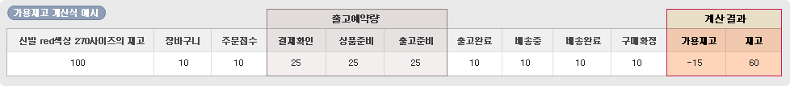
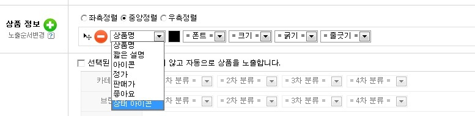

Q. 재고에 따른 상품판매 여부를 각 상품마다 할 수 없나요?
모든 상품은 기본적으로 재고에 따른 상품판매 여부는 [통합 설정]을 따릅니다.
단, 여러 가지 사유로 인하여 상품마다 개별 설정이 필요할 경우 상품마다 재고에 따른 상품판매 여부를 설정 할 수 있습니다. (상품>
상품리스트
)
Q. 옵션마다 재고가 있을 때는 어떻게 되나요?
나*키 운동화
블랙
260
25개
블랙
270
25개
화이트
260
25개
화이트
270
25개
총재고
100개
Q. 가용재고는 ‘-’(마이너스)가 될 수도 있나요?

Q 상품의 상태마다 보여지는 이미지를 수정하고 싶어요.
관리환경 >
상품관리
에서 상태별 이미지 세팅을 클릭하거나 지금 바로 오른쪽 버튼을 클릭하여 수정할 수도 있습니다.
상태별 이미지 세팅
Q 상품 리스트에 있는 상품이 분명 품절(또는 재고확보중)인데도 품절 아이콘이 보이지 않습니다.
EYE-DESIGN의 상품디스플레이에서 노출되는 상품정보 중
[상태 아이콘]
을 선택만 해 주시면 됩니다.
Q 상품 리스트에 있는 상품이 분명 품절(또는 재고확보중)인데도 품절 아이콘이 보이지 않습니다.
관리환경 >
카테고리
꾸미기에서 노출되는 상품정보 중
[상태 아이콘]
을 선택만 해 주시면 됩니다.
↓아래는
[상태 아이콘]
선택하는 예시 화면입니다.
